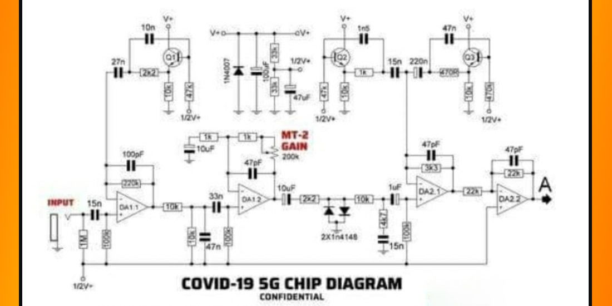
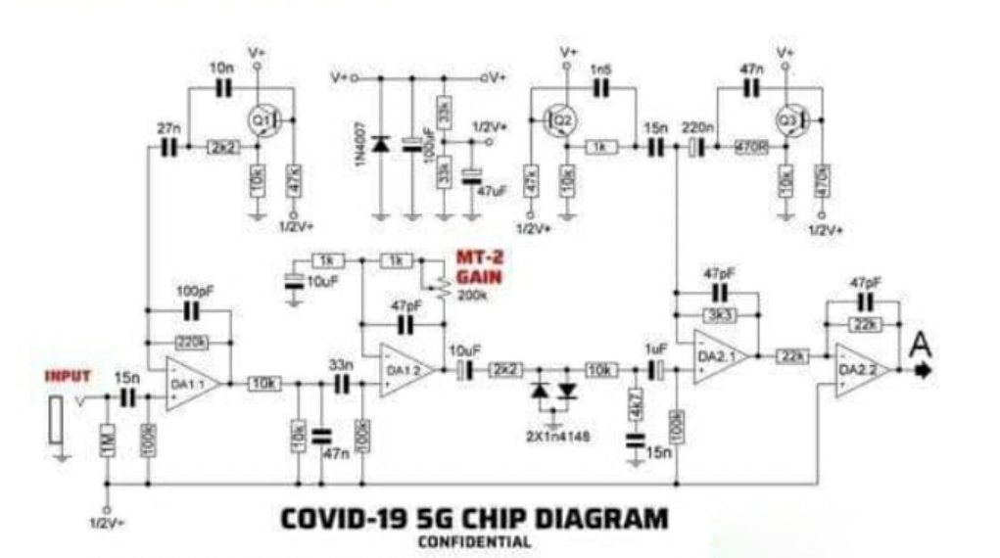

No, no hay un 'chip 5G' en la vacuna contra la COVID-19

Tenemos que reconocer que a los teóricos de la conspiración se les ocurren cosas realmente increíbles.
La última vez que nos pusimos a ver las cosas que decían estos tipos que odian el 5G, estaban comprando falsas jaulas de Faraday porque creían que la quinta generación de redes móviles de banda ancha propaga la COVID-19, y que si ponían sus routers WiFi en las cajas metálicas, estarían protegidos de la dañina radiación.Sí, suena tan ridículo que da hasta risa, ¿verdad?En un giro divertido de los hechos, los que compraron esa supuesta protección para sus routers que eran falsificaciones creyendo que eran de verdad se cabrearon al usar las jaulas ya que, de hecho, bloqueaban sus señales WiFi... es decir, no ya tan sólo la ficticia radiación del 5G.
Los último de estos descabellados teóricos de la conspiración 5G es, cuando menos, un disparate de magnitudes colosales, ya que han subido la apuesta difundiendo un engaño que probablemente haya atraído a muchos de esos que se ponen papel de aluminio en la cabeza.
La semana pasada, el ingeniero de software Mario Fusco contó en Twitter que en Italia había gente que había empezado a compartir un diagrama del 'chip 5G que se ha insertado en la vacuna contra la COVID-19'.El diagrama, que puedes ver a continuación y que se etiqueta como 'confidencial' -ya que supuestamente así es como se sabe que estamos ante algo 'serio'- muestra diversos circuitos que aparentemente confiran el microchip que los gobiernos del mundo han introducido en secreto en las vacunas que salvan vidas.
Lamentablemente, el esquema en cuestión no es el de un siniestro microchip, sino más bien algo que podría decirse que es aún más malvado: un pedal de guitarra Boss Metal Zone MT-2, destinado a ser usado por los guitarristas más oscuros que invocan los sonidos del diablo rasgando las seis cuerdas.
This content is imported from Twitter.You may be able to find the same content in another format, or you may be able to find more information, at their web site.
Here in Italy people started to share this figure claiming that this is the diagram of the 5G chip that has been inserted in the covid vaccine.In reality it is the electric circuit of a guitar pedal and I believe that putting it in the covid vaccine has been an excellent idea💡 pic.twitter.com/qXKnv7VVly— Mario Fusco 🇪🇺 (@mariofusco) December 28, 2020
Guitar World señala que el diagrama tiene una sección de 'frecuencia 5G' (vaya por dios), pero también términos típicos del mundo de la guitarra como 'MT-2 Gain', 'Footswitch', y otras palabras que cualquier músico reconocerá, como 'Treble' y 'Bass'.
Como era de esperar, Twitter estaba encantado con el disparate:
This content is imported from Twitter.You may be able to find the same content in another format, or you may be able to find more information, at their web site.
This content is imported from Twitter.You may be able to find the same content in another format, or you may be able to find more information, at their web site.
E
Es divertido reírse de cosas así, pero este tipo de conspiraciones, por ridículas que parezcan, pueden ser peligrosas.
Aunque es imposible rastrear la teoría de la conspiración del chip 5G en la vacuna conta la COVID-19 hasta su fuente original, una variación de esta creencia ha permeado en los círculos de la conspiración durante meses.En julio de 2020, por ejemplo, el filántropo Bill Gates comentó en
CBS News que no, que no estaba liderando la lucha por conseguir una vacuna porque quería implantar microchips en las personas.'En absoluto, no hay ninguna conexión entre estas vacunas y algún tipo de rastreo', dijo Gates.'No sé de dónde ha salido algo así'.
This content is imported from Twitter.You may be able to find the same content in another format, or you may be able to find more information, at their web site.
.@NorahODonnell: 'The posts on social media about you and coronavirus are considered the most widespread coronavirus falsehoods that exist ... To be clear, do you want a vaccine so that you can implant microchips into people?'Gates: 'No… I don't know where that came from.'pic.twitter.com/f4MOP19BY6— CBS News (@CBSNews) July 22, 2020
Algunos conspiradores del 5G también creen que la COVID-19 se puede propagar a través de las torres 5G, una teoría que surge de un 'estudio' desacreditado que de alguna manera llegó a la reputada
PubMed el verano pasado.Aunque el estudio, que afirmaba que las ondas milimétricas del 5G pueden ayudar al coronavirus a colonizar el cuerpo humano, se retractó rápidamente, eso no impidió que determinada gente quemara torres 5G y acosara a los ingenieros de telecomunicaciones.
Si combinamos esa afirmación con otra teoría - la de que si las empresas chinas, con vínculos con gobierno comunista chino, terminan implementando las torres 5G que transmiten la comunicación inalámbrica 5G, podrían espiarnos a través de 'puertas traseras' tecnológicas en esos equipos - es sencillo ver cómo algunos conspiradores han sacado dudosas conclusiones sobre la vacuna de la COVID-19.
Así que seamos claros una vez más: las torres 5G no son peligrosas... y tampoco te van a matar.
Aunque las torres 5G son funcionalmente diferentes a las torres de telefonía móvil que estás acostumbrado a ver, eso se debe a que el hardware emite ondas de radio de mayor frecuencia que son mucho más cortas en longitud, pero en esencia son inofensivas.Y cuando añades la COVID-19 a la mezcla, es así como se obtienen teoría preocupantes e infundadas sobre los vínculos entre el 5G y el coronavirus, y lo que es peor, las vacunas.
Así que dejemos de sembrar miedo y empecemos a aportar cosas positivas en estos tiempos tan complejos.
This content is created and maintained by a third party, and imported onto this page to help users provide their email addresses.You may be able to find more information about this and similar content at piano.io
Posted On: 2021-01-06T00:00:00
Posted By: Andrew Daniels

Content Date: 2021-01-06
Download Date: 2021-05-30
Document ID: L0C04CKAD